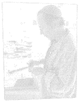

Stained glass has always been a passion - It's often called
'painting with
light'

Greenart is the website for Scottish artist Richard Green.
Richard is a
painter but now works with stained glass creating free standing stained glass
panels from his studio in Blackness, West Lothian. He also produces small pieces of glass
jewellery.
The stained
glass galleries on this website show Richard's latest work and there is also
information on commissioning an artwork from the artist. You can also read more about Richard
or how he designs his stained
glass artwork.